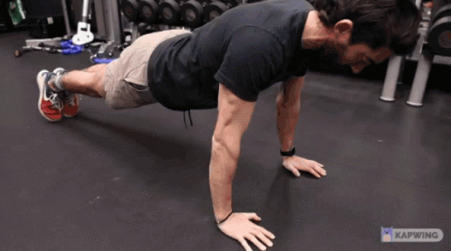
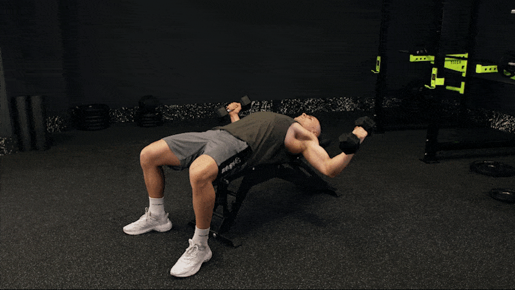
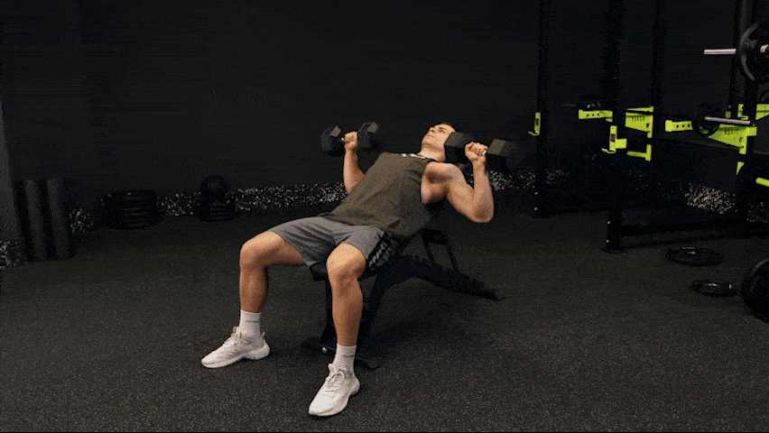
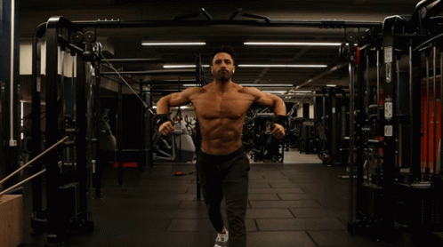

Ćwiczenia Mięśni Klatki Piersiowej
Wyciskanie sztangi na ławce

1. Połóż się płasko na ławce, stopy na ziemi. Z prostymi ramionami odciąż drążek.
2. Opuść drążek do połowy klatki piersiowej.
3. Podnieś sztange, aż zablokujesz łokcie.
Push Up

1. Połóż dłonie mocno na ziemi, bezpośrednio pod ramionami.
2. Spłaszcz plecy, tak aby całe ciało było proste i powoli opuść ciało.
3. Ściągnij łopatki do tyłu i w dół, trzymając łokcie blisko ciała.
4. Wydech podczas odpychania się do pozycji wyjściowej.
Wyciskanie hantli na ławce skośnej

1. Połóż się płasko na ławce skośnej, stopy na ziemi. Podnoś hantle, aż będziesz mieć proste ramiona.
2. Opuść hantle do połowy klatki piersiowej.
3. Podnieś hantle, aż zablokujesz łokcie.
Unoszenie hantli w górę klatki piersiowej

1. Połóż się płasko na ławce i połóż stopy na ziemi.
2. Rozpocznij ćwiczenie z hantlami trzymanymi razem nad klatką piersiową, łokcie lekko ugięte.
3. Jednocześnie opuść ciężarki po obu stronach.
4. Zatrzymaj się, gdy ciężarki będą równoległe do ławki, a następnie podnieś ręce do pozycji wyjściowej.
Kabel Pec Fly

1. Użyj uchwytu ustawionego aż do dolnej części maszyny..
2. Przyłóż oba uchwyty do klatki piersiowej i upewnij się, że znajdujesz się pośrodku skrzyżowania linek.
3. Przejdź kilka kroków do przodu. Następnie wypchnij ciężar do przodu. Od tego momentu ramiona powinny poziomo odwodzić i przywodzić, podczas gdy łokcie pozostają w ustalonej pozycji.